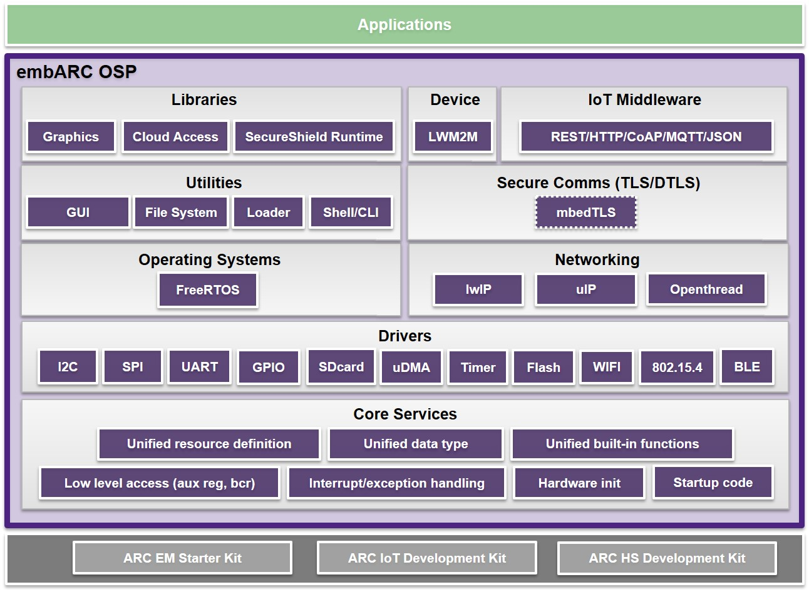

Overview¶
Introduction¶
The embARC Open Software Platform (OSP) is an open software platform to facilitate the development of embedded systems based on DesignWare® ARC® processors.
It is designed to provide a unified platform for DesignWare® ARC® processors users by defining consistent and simple software interfaces to the processor and peripherals, together with ports of several well known FOSS embedded software stacks to DesignWare® ARC® processors.
embARC OSP provides a solid starting foundation for embedded developers, simplifying development and improving time-to-market through software reuse.
Purpose and Scope¶
embARC OSP is an open software platform, providing useful components with a consistent software layering model and interfaces to DesignWare® ARC® processors for portability and reusability. Developers can write software based on embARC OSP to accelerate implementation and reduce their learning curve and the time-to-market of final product implementation.
The goals of embARC are as follows:
- Provide an easy introduction for new users of DesignWare® ARC® processors.
- Provide useful software stacks as a starting point for building embedded products based on DesignWare® ARC® processors and well-known open-source software packages.
- Provide broad ranges of examples to demonstrate DesignWare® ARC® processors usage in various embedded IoT applications.
- Provide simple, frictionless out-of-the box user experience through:
- Single archive download containing all embARC packages and examples.
- Comprehensive pre-integrated tools support.
- Clear, simple, and extensive how-to instructions.
Architecture¶
The embARC Open Software Platform general architecture and components are shown in the block diagram below.
Note
Dotted line boxes indicate supported packages being excluded from the embARC OSP distribution. See the related embARC documentation sections for information on how to obtain these packages for use with embARC
- For secure communication, see mbed TLS
- FOr MQX support, see MQX support
- ARC Hardware Abstraction Layer (ARC HAL) provides the necessary hardware abstraction for DesignWare® ARC® processors ISA compatible processors.
- Device Hardware Abstraction Layer (HAL) provides hardware abstraction for common platform devices and implementation of DesignWare IP drivers, such as UART, IIC, and SPI.
- Board Support Package (BSP) Layer provides support for different boards based on the ARCv2 processors.
- OS Layer provides embedded operating-system support, including options for traditional Real-Time Operating Systems (RTOSs).
- Library Layer provides basic common library support for embedded systems, such as C library, dlmalloc library and SecureShield library.
- Middleware Layer includes mainstream embedded software-stack solutions, including FAT file system, network stack, simple shell/Command Line Interface (CLI), IoT protocols, lightweight graphics, IoT cloud connectivity and more.
Many examples, covering IoT, network, and sensor application cases, are also provided to help get started quickly with DesignWare® ARC® processors and the embARC OSP software.
Toolchain Support¶
The embARC OSP software is supported by the following toolchain offerings from Synopsys:
- The DesignWare ARC MetaWare Development Toolkit builds upon a 25-year legacy of industry-leading compiler and debugger products. It is a complete solution that contains all the components needed to support the development, debugging, and tuning of embedded applications for the DesignWare® ARC® processors.
- The GNU Toolchain for DesignWare ARC Processors provides a pre-built GNU toolchain for DesignWare® ARC® processors integrated into the Eclipse IDE. The GNU tools are maintained by Synopsys with new releases being published at regular intervals.
- The DesignWare ARC MetaWare Development Toolkit Lite Edition is a functioning demonstration of the MetaWare Development Toolkit, but has a number of restrictions, including a code-size limit of 32 Kb and no run-time library sources. It is available for free download and use for academic, personal, and noncompetitive evaluation purposes.
Copyright Notice¶
Copyright (c) 2018, Synopsys, Inc. All rights reserved.
Redistribution and use in source and binary forms, with or without modification, are permitted provided that the following conditions are met:
- Redistributions of source code must retain the above copyright notice, this list of conditions and the following disclaimer.
- Redistributions in binary form must reproduce the above copyright notice, this list of conditions and the following disclaimer in the documentation and/or other materials provided with the distribution.
- Neither the name of the Synopsys, Inc., nor the names of its contributors may be used to endorse or promote products derived from this software without specific prior written permission.
THIS SOFTWARE IS PROVIDED BY THE COPYRIGHT HOLDERS AND CONTRIBUTORS “AS IS” AND ANY EXPRESS OR IMPLIED WARRANTIES, INCLUDING, BUT NOT LIMITED TO, THE IMPLIED WARRANTIES OF MERCHANTABILITY AND FITNESS FOR A PARTICULAR PURPOSE ARE DISCLAIMED. IN NO EVENT SHALL THE COPYRIGHT HOLDER OR CONTRIBUTORS BE LIABLE FOR ANY DIRECT, INDIRECT, INCIDENTAL, SPECIAL, EXEMPLARY, OR CONSEQUENTIAL DAMAGES (INCLUDING, BUT NOT LIMITED TO, PROCUREMENT OF SUBSTITUTE GOODS OR SERVICES; LOSS OF USE, DATA, OR PROFITS; OR BUSINESS INTERRUPTION) HOWEVER CAUSED AND ON ANY THEORY OF LIABILITY, WHETHER IN CONTRACT, STRICT LIABILITY, OR TORT (INCLUDING NEGLIGENCE OR OTHERWISE) ARISING IN ANY WAY OUT OF THE USE OF THIS SOFTWARE, EVEN IF ADVISED OF THE POSSIBILITY OF SUCH DAMAGE. NY THEORY OF LIABILITY, WHETHER IN CONTRACT, STRICT LIABILITY, OR TORT (INCLUDING NEGLIGENCE OR OTHERWISE) ARISING IN ANY WAY OUT OF THE USE OF THIS SOFTWARE, EVEN IF ADVISED OF THE POSSIBILITY OF SUCH DAMAGE.
For complete embARC license information, please refer to the embARC FOSS Notice.